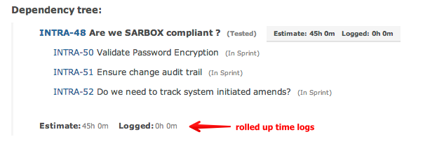
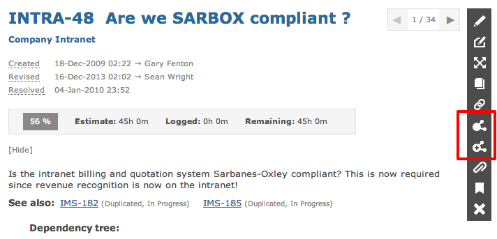
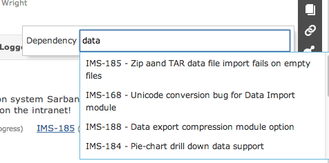
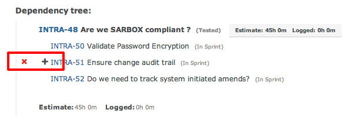

Item dependencies provide a hierarchical relationship of parent to child.

A parent can have multiple children and can also can be a child of some other item.
You can choose to add existing items as dependents or create a new item as a dependent:

Searching for existing items provides an easy way to build up task hierarchies.

Hovering over an item will allow you to delete it or add a dependency to it.

WORKFLOW An item with dependencies CANNOT be closed until all child dependencies are first closed.